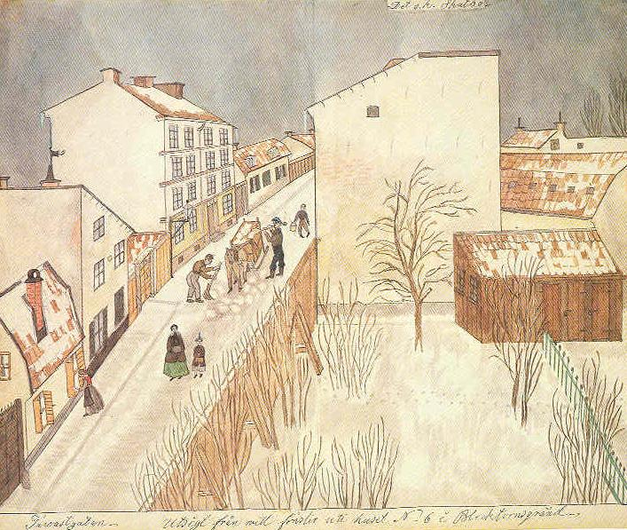

Södermalm i tid och rum
TavastgatanMorgonbild med snö. Fönsterluckorna till huset nr 17 öppnas utifrån. En borgarfru med dotter, båda med muffar, kommer vandrande nedför gatan. Renhållningen avlägsnar snö med kvast och en stor träspade, som inte skadade husdetaljer. Snön bortfördes i stor trälåda på släde. Längre upp på gatan en spelevink med latrinhink.
Känsligt utsparade detaljer: ljusblå istappar, rosafärgade tegel bakom blindgavelns vindpinade puts, avträdesdörrarnas varmbruna nyanser. I snön syns två parallella kattspår.
Det s k Skatbo
I stark kontrast mot sommaridyllen från S:t Paulsgatan står en utsikt från mamsell Sjöbergs sista bostad här i livet, Blecktornsgränd 6.
Från sitt lilla vindsrum däruppe i 6:an har hon sett ut mot väster, mot Tavastgatans mycket oregelbundna fattigbebyggelse med hyreskasernernas ärriga brandgavlar över envåningslängor och plank, uthus och förvildade trädgårdar.

Det är det torftigaste motiv man gärna kan välja, men mamsell Sjöberg har fyllt det med ett slags knarrande och barsk vinterlyrik, som sveper en dämpad helton av gråvitt
Hon har trängt verkligheten rätt in på livet, sådan den låg utbredd i all sin fattigdom nedanför hennes fönster, men genom sin känsla för de små svala valörerna i vintertonen har hon förvandlat detta proletärkvarter på Mariabergets nacke till ett stycke besjälat stockholmsmåleri, som alltjämt har något att säga oss om konstens makt att upptäcka skönhet även i det gråa och påvra.